suppressWarnings(
suppressPackageStartupMessages({
library(rstan)
library(dplyr)
library(stringr)
library(readxl)
library(here)
library(janitor)
library(marginaleffects)
library(pins)
library(reshape2)
library(arrow)
library(cowplot)
library(modelr)
library(bnlearn)
library(future)
library(dagitty)
library(cmdstanr)
library(brms)
library(ggdag)
library(tidybayes)
library(ggtext)
library(ggplot2)
library(simDAG)
})
)
bayesplot::color_scheme_set("blue")
options(mc.cores = 1) Causal Inference and directed acyclic graphs
Introduction
In this section, we will cover causal inference via Stan and tools such as daggity.
basic_dag <- dagify(
Y ~ X + A,
X ~ A,
B ~ X + Y,
exposure = "X",
outcome = "Y",
coords = list(
x = c(X = 1, Y = 3, A = 2, B = 2),
y = c(X = 1, Y = 1, A = 2, B = 0)
)
)
basic_dag_plot <- basic_dag |>
tidy_dagitty() |>
mutate(var_type = case_when(
name == "X" ~ "Exposure",
name == "Y" ~ "Outcome",
str_detect(name, "A") ~ "Confounder",
str_detect(name, "B") ~ "Collider"
)) |>
mutate(var_label = case_match(name,
"X" ~ "Treatment",
"Y" ~ "Outcome",
"A" ~ "",
"B" ~ ""
))
p1 <- ggplot(basic_dag_plot, aes(x = x, y = y, xend = xend, yend = yend)) +
geom_dag_edges() +
geom_dag_point(aes(color = var_type), size = 12) +
geom_richtext(
aes(label = name), fontface = "bold", color = "white",
fill = NA, label.color = NA,
label.padding = grid::unit(c(3, 0, 0, 0), "pt")
) +
geom_dag_text(
data = filter(basic_dag_plot, var_type != "Confounder"), aes(label = var_label),
nudge_y = -0.25, color = "black", size = 11, size.unit = "pt"
) +
geom_dag_text(
data = filter(basic_dag_plot, var_type == "Confounder"), aes(label = var_label),
nudge_y = 0.26, color = "black", size = 11, size.unit = "pt"
) +
geom_text(
aes(x = (x + xend) / 2, y = (y + yend + 0.4) / 2, label = c("","1.10","","","-1.70","-1.90")),
color = "black", size = 5
) +
scale_color_manual(values = c("#44AA99", "#6699CC", "#882255","#999933"), guide = "none") +
theme_dag()
Simulated data
#| label: Simulated data
#| message: false
dag <- empty_dag()
dag <- dag +
# parent nodes
node("a", type="rnorm", mean = 10, sd=4) +
# child nodes
node("x", type="gaussian", parents=c("a"), betas=c(3.6),
intercept=12, error = 2) +
node("y", type="gaussian", parents=c("a","x"), betas=c(1.1, -1.7),
intercept=12, error = 2) +
node("b", type="gaussian", parents=c("x","y"), betas=c(2.5, -1.9),
intercept=-15, error = 2)
set.seed(42)
sim_dat <- sim_from_dag(dag=dag, n_sim=1000)
head(sim_dat) a x y b
<num> <num> <num> <num>
1: 15.483834 72.39192 -93.53289 342.3210
2: 7.741207 40.91659 -49.59872 179.9436
3: 11.452514 55.17052 -72.64158 260.1313
4: 12.531450 57.86717 -76.60300 272.9163
5: 11.617073 51.82960 -65.91515 242.0443
6: 9.575502 45.27684 -53.70590 198.4744#| out-width: 100%
#| fig-height: 4
#| fig-width: 6
#| warning: false
#| echo: false
p1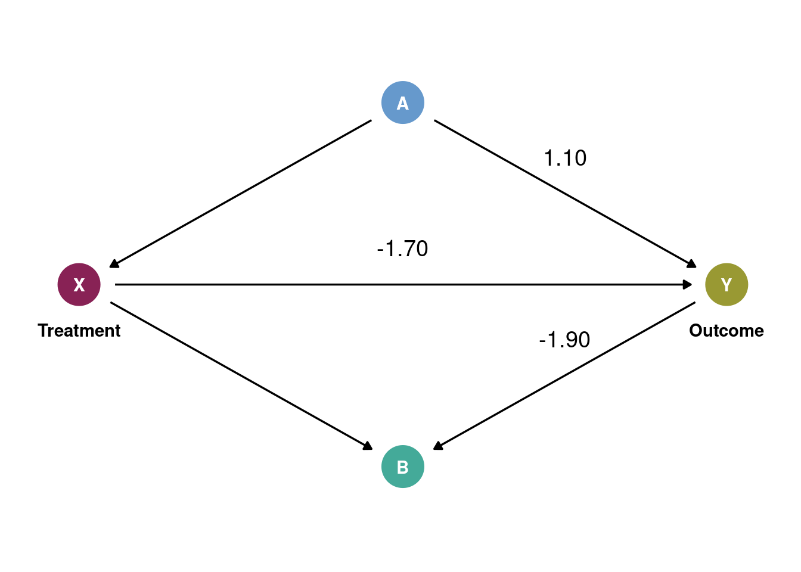
Figure 1: DAG of the simulated data that shows the relationships (arrows) between the outcome (Y), treatment (X), and other measured variables (A + B). The numbers on the arrows represent the known magnitude and direction of relationships with Y.
Under the hood
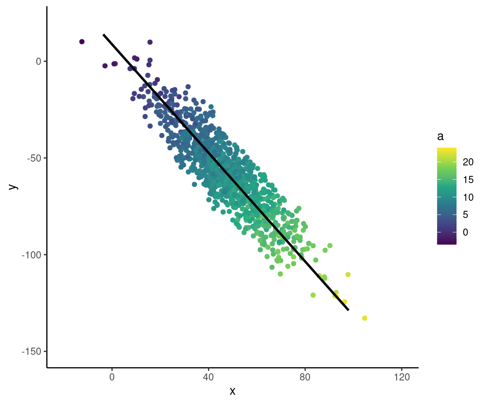
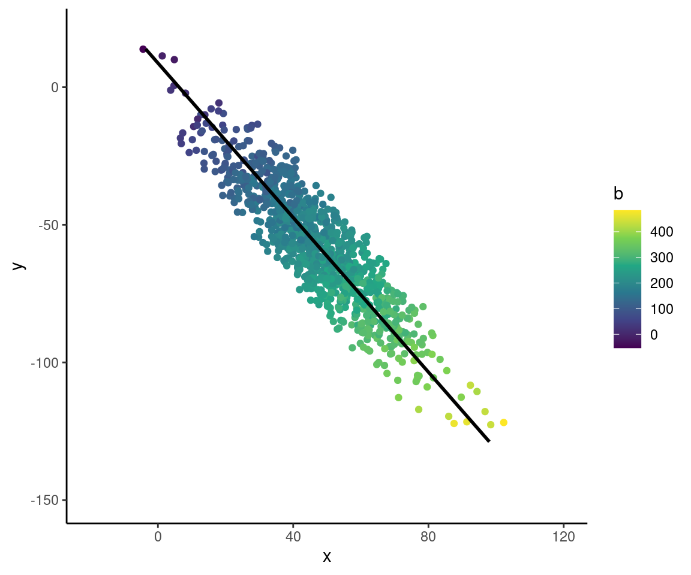
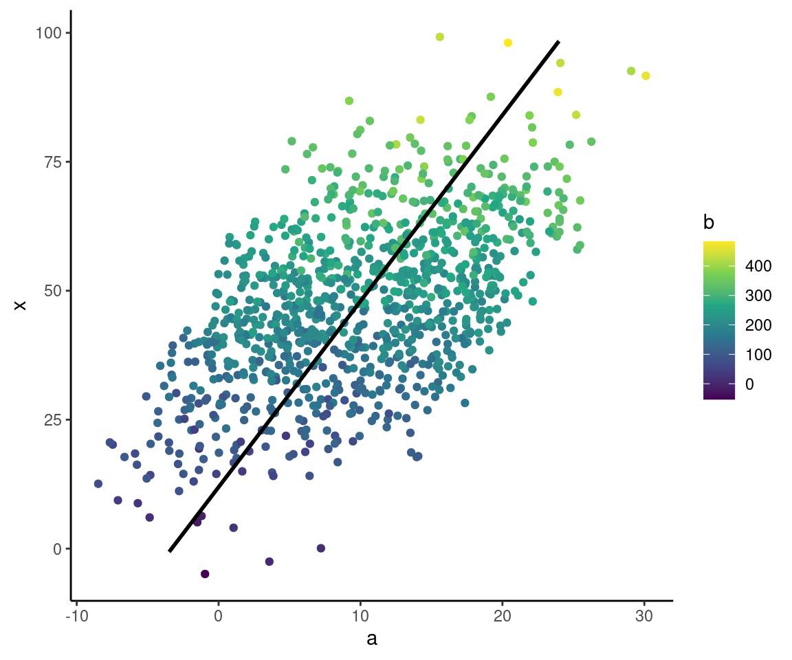
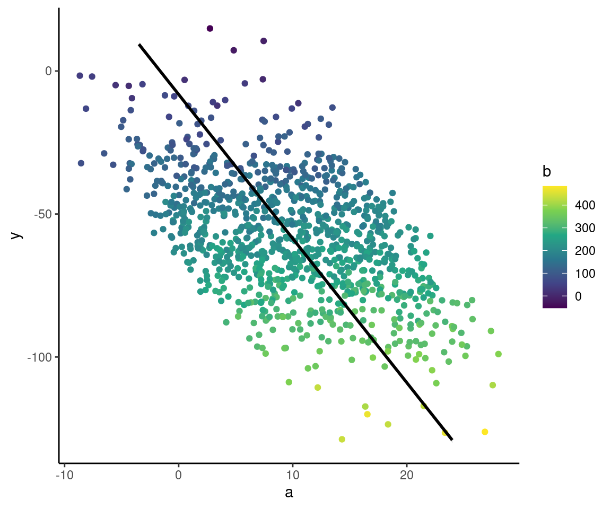
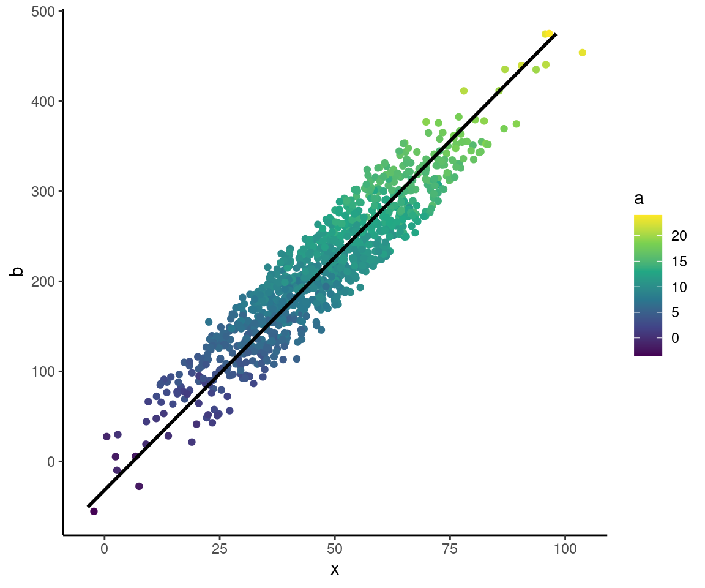
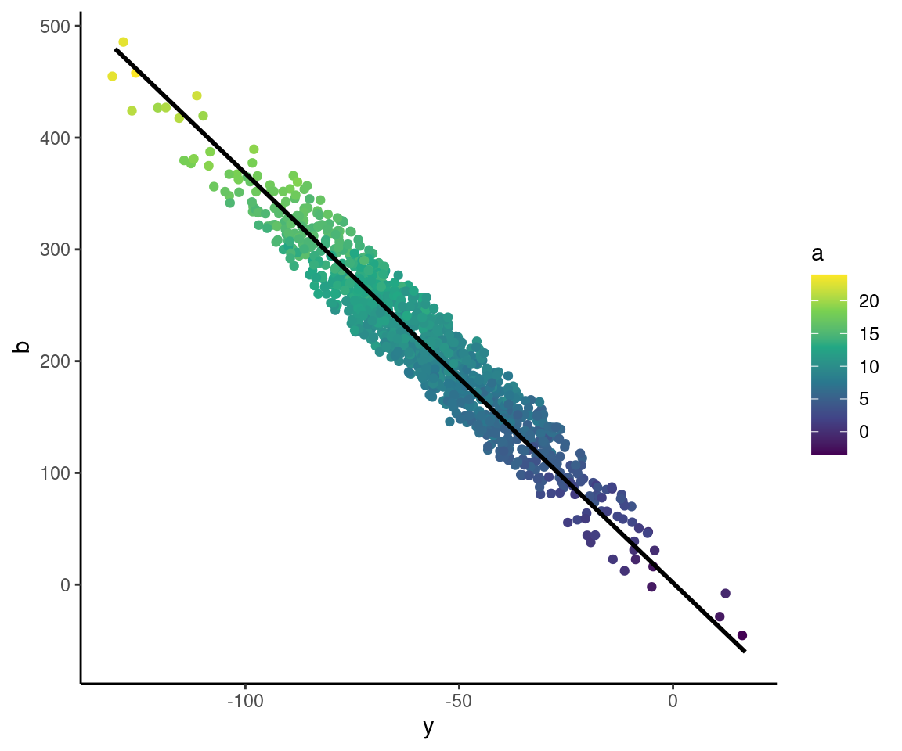
Science before statistics
- Most approaches fail to recover the simulated value of -1.70.
fit_brm <- function(formula, model_name) {
brm(formula,
family = gaussian(link = "identity"),
data = sim_dat,
backend = "cmdstanr",
file = here("pages", "stan_workshop", "model", model_name),
threads = threading(3),
silent = 0,
refresh = 500,
chains = 4,
cores = 4,
warmup = 2000,
iter = 4000)
}
# Models
mod_1 <- fit_brm(y ~ x, "mod_1") # Univariate
mod_2 <- fit_brm(y ~ a, "mod_2") # Univariate
mod_3 <- fit_brm(y ~ b, "mod_3") # Univariate
mod_4 <- fit_brm(y ~ x + a + b, "mod_4") # Casual Salad
mod_5 <- fit_brm(y ~ x + a, "mod_5") # Confounder
mod_6 <- fit_brm(y ~ x + b, "mod_6") # Collider Family: gaussian
Links: mu = identity; sigma = identity
Formula: y ~ x
Data: sim_dat (Number of observations: 1000)
Draws: 4 chains, each with iter = 4000; warmup = 2000; thin = 1;
total post-warmup draws = 8000
Regression Coefficients:
Estimate Est.Error l-95% CI u-95% CI Rhat Bulk_ESS Tail_ESS
Intercept 8.78 0.24 8.32 9.24 1.00 8570 6216
x -1.40 0.00 -1.41 -1.39 1.00 8980 6141
Further Distributional Parameters:
Estimate Est.Error l-95% CI u-95% CI Rhat Bulk_ESS Tail_ESS
sigma 2.15 0.05 2.06 2.25 1.00 8075 5450
Draws were sampled using sample(hmc). For each parameter, Bulk_ESS
and Tail_ESS are effective sample size measures, and Rhat is the potential
scale reduction factor on split chains (at convergence, Rhat = 1). Family: gaussian
Links: mu = identity; sigma = identity
Formula: y ~ a
Data: sim_dat (Number of observations: 1000)
Draws: 4 chains, each with iter = 4000; warmup = 2000; thin = 1;
total post-warmup draws = 8000
Regression Coefficients:
Estimate Est.Error l-95% CI u-95% CI Rhat Bulk_ESS Tail_ESS
Intercept -8.20 0.33 -8.86 -7.56 1.00 7597 6147
a -5.04 0.03 -5.10 -4.98 1.00 7606 6462
Further Distributional Parameters:
Estimate Est.Error l-95% CI u-95% CI Rhat Bulk_ESS Tail_ESS
sigma 3.97 0.09 3.80 4.15 1.00 8528 6338
Draws were sampled using sample(hmc). For each parameter, Bulk_ESS
and Tail_ESS are effective sample size measures, and Rhat is the potential
scale reduction factor on split chains (at convergence, Rhat = 1). Family: gaussian
Links: mu = identity; sigma = identity
Formula: y ~ b
Data: sim_dat (Number of observations: 1000)
Draws: 4 chains, each with iter = 4000; warmup = 2000; thin = 1;
total post-warmup draws = 8000
Regression Coefficients:
Estimate Est.Error l-95% CI u-95% CI Rhat Bulk_ESS Tail_ESS
Intercept 0.24 0.11 0.02 0.46 1.00 8126 6167
b -0.27 0.00 -0.27 -0.27 1.00 10143 6244
Further Distributional Parameters:
Estimate Est.Error l-95% CI u-95% CI Rhat Bulk_ESS Tail_ESS
sigma 1.16 0.03 1.11 1.21 1.00 4012 3903
Draws were sampled using sample(hmc). For each parameter, Bulk_ESS
and Tail_ESS are effective sample size measures, and Rhat is the potential
scale reduction factor on split chains (at convergence, Rhat = 1). Family: gaussian
Links: mu = identity; sigma = identity
Formula: y ~ x + a + b
Data: sim_dat (Number of observations: 1000)
Draws: 4 chains, each with iter = 4000; warmup = 2000; thin = 1;
total post-warmup draws = 8000
Regression Coefficients:
Estimate Est.Error l-95% CI u-95% CI Rhat Bulk_ESS Tail_ESS
Intercept -4.03 0.32 -4.65 -3.40 1.00 3138 4273
x 0.71 0.04 0.63 0.79 1.00 3070 3834
a 0.15 0.06 0.04 0.26 1.00 4102 5140
b -0.42 0.01 -0.43 -0.40 1.00 3635 4377
Further Distributional Parameters:
Estimate Est.Error l-95% CI u-95% CI Rhat Bulk_ESS Tail_ESS
sigma 0.92 0.02 0.88 0.96 1.00 5725 4395
Draws were sampled using sample(hmc). For each parameter, Bulk_ESS
and Tail_ESS are effective sample size measures, and Rhat is the potential
scale reduction factor on split chains (at convergence, Rhat = 1). Family: gaussian
Links: mu = identity; sigma = identity
Formula: y ~ x + a
Data: sim_dat (Number of observations: 1000)
Draws: 4 chains, each with iter = 4000; warmup = 2000; thin = 1;
total post-warmup draws = 8000
Regression Coefficients:
Estimate Est.Error l-95% CI u-95% CI Rhat Bulk_ESS Tail_ESS
Intercept 12.32 0.43 11.47 13.16 1.00 3341 4050
x -1.72 0.03 -1.78 -1.65 1.00 2829 3080
a 1.15 0.12 0.92 1.39 1.00 2819 3058
Further Distributional Parameters:
Estimate Est.Error l-95% CI u-95% CI Rhat Bulk_ESS Tail_ESS
sigma 2.06 0.05 1.97 2.16 1.00 4982 4378
Draws were sampled using sample(hmc). For each parameter, Bulk_ESS
and Tail_ESS are effective sample size measures, and Rhat is the potential
scale reduction factor on split chains (at convergence, Rhat = 1). Family: gaussian
Links: mu = identity; sigma = identity
Formula: y ~ x + b
Data: sim_dat (Number of observations: 1000)
Draws: 4 chains, each with iter = 4000; warmup = 2000; thin = 1;
total post-warmup draws = 8000
Regression Coefficients:
Estimate Est.Error l-95% CI u-95% CI Rhat Bulk_ESS Tail_ESS
Intercept -4.68 0.22 -5.11 -4.24 1.00 3438 4593
x 0.78 0.03 0.72 0.84 1.00 3175 3946
b -0.42 0.01 -0.43 -0.41 1.00 3181 3901
Further Distributional Parameters:
Estimate Est.Error l-95% CI u-95% CI Rhat Bulk_ESS Tail_ESS
sigma 0.93 0.02 0.89 0.97 1.00 4964 4359
Draws were sampled using sample(hmc). For each parameter, Bulk_ESS
and Tail_ESS are effective sample size measures, and Rhat is the potential
scale reduction factor on split chains (at convergence, Rhat = 1).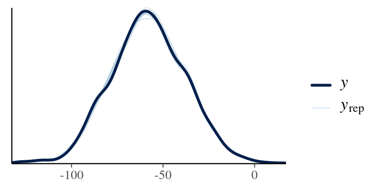
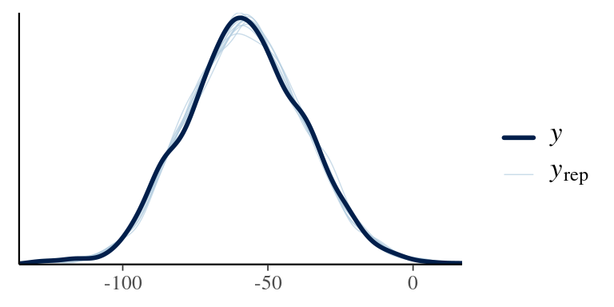
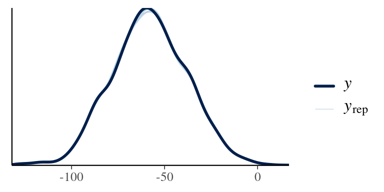
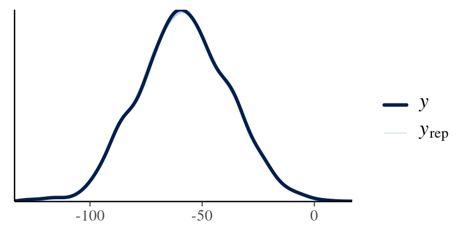
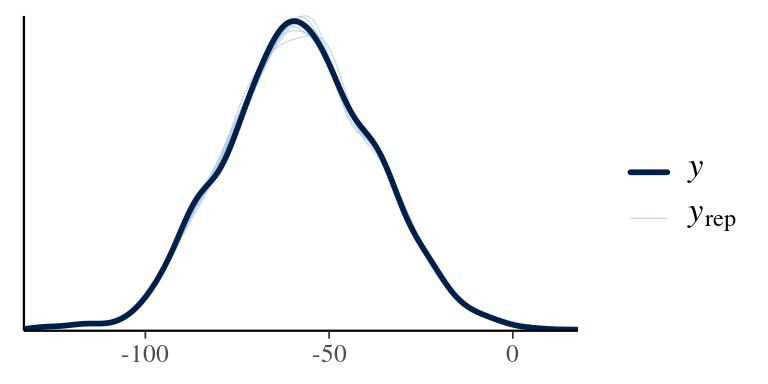
[1] "mod_1: -1.4"[1] "mod_2: -5.04"[1] "mod_3: -0.27"[1] "mod_4: 0.71, 0.15, -0.42"[1] "mod_5: -1.72"[1] "mod_6: 0.78"[1] "Example Stan code for mod_1"// generated with brms 2.22.0
functions {
}
data {
int<lower=1> N; // total number of observations
vector[N] Y; // response variable
int<lower=1> K; // number of population-level effects
matrix[N, K] X; // population-level design matrix
int<lower=1> Kc; // number of population-level effects after centering
int prior_only; // should the likelihood be ignored?
}
transformed data {
matrix[N, Kc] Xc; // centered version of X without an intercept
vector[Kc] means_X; // column means of X before centering
for (i in 2:K) {
means_X[i - 1] = mean(X[, i]);
Xc[, i - 1] = X[, i] - means_X[i - 1];
}
}
parameters {
vector[Kc] b; // regression coefficients
real Intercept; // temporary intercept for centered predictors
real<lower=0> sigma; // dispersion parameter
}
transformed parameters {
real lprior = 0; // prior contributions to the log posterior
lprior += student_t_lpdf(Intercept | 3, -58.4, 20);
lprior += student_t_lpdf(sigma | 3, 0, 20)
- 1 * student_t_lccdf(0 | 3, 0, 20);
}
model {
// likelihood including constants
if (!prior_only) {
target += normal_id_glm_lpdf(Y | Xc, Intercept, b, sigma);
}
// priors including constants
target += lprior;
}
generated quantities {
// actual population-level intercept
real b_Intercept = Intercept - dot_product(means_X, b);
}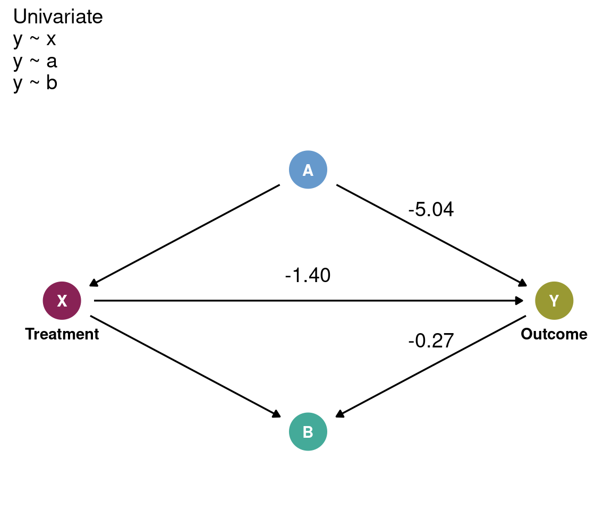
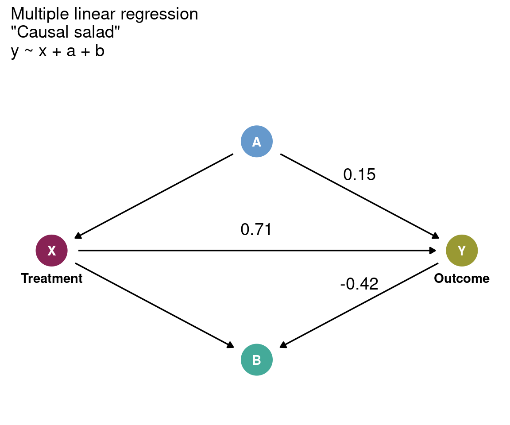
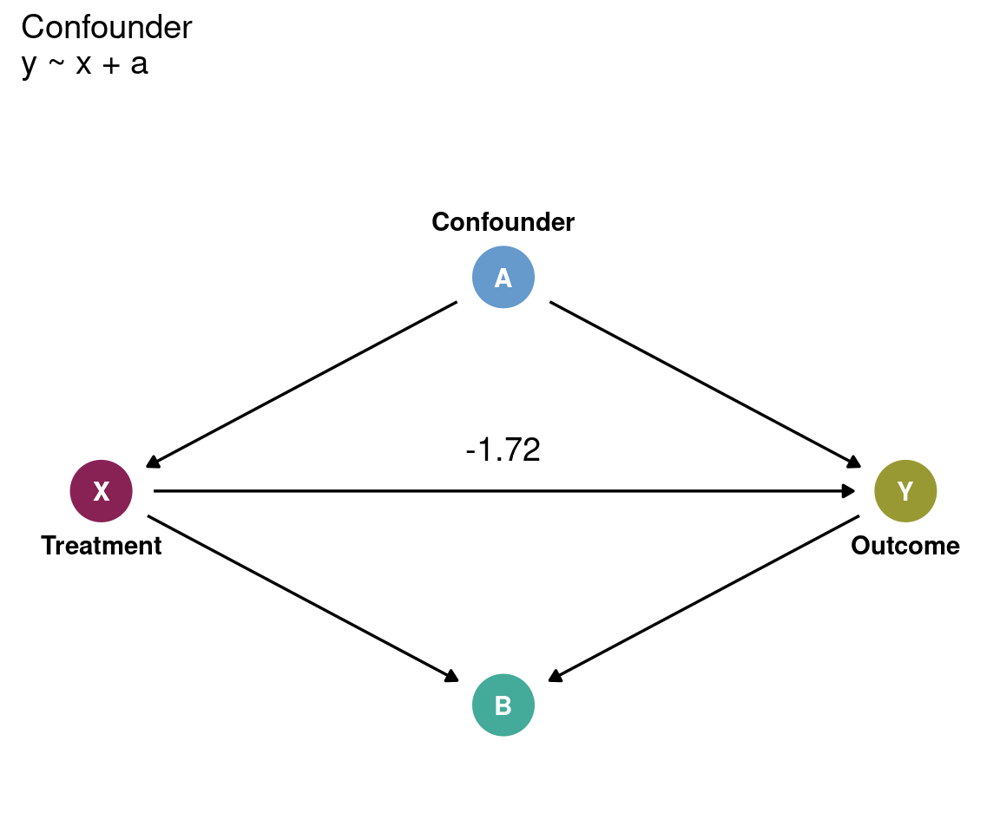
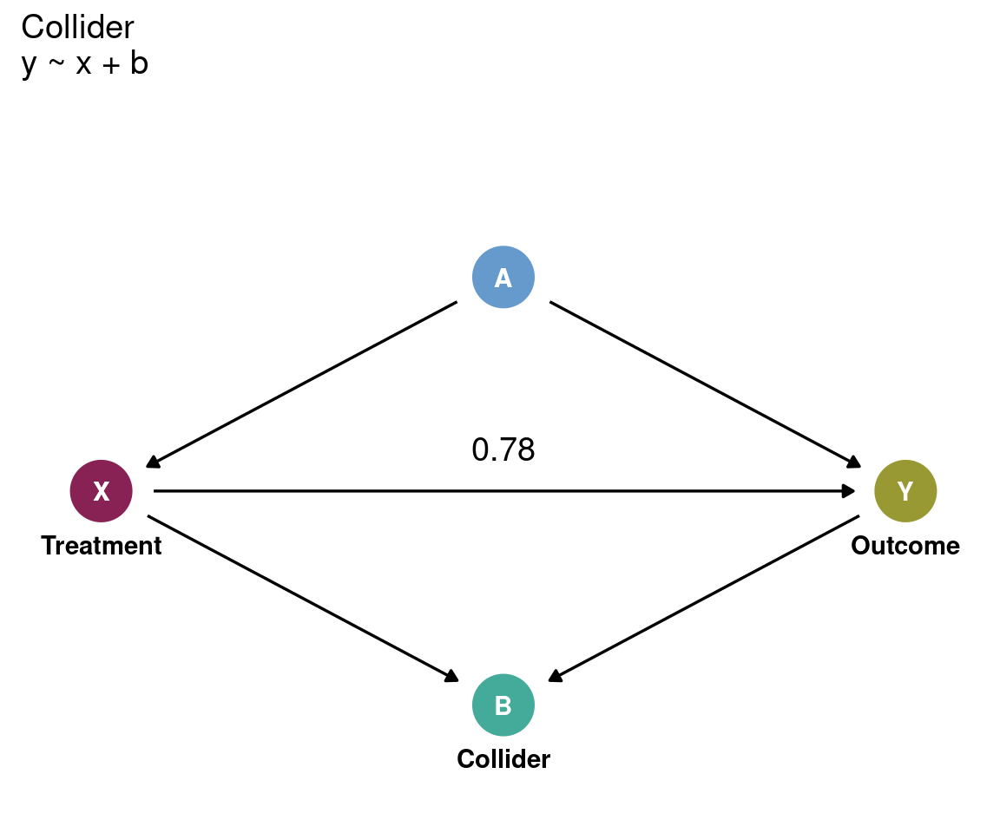
Figure 2: Various regression approaches to estimate the Y ~ X relationship (simulated value -1.71). Coefficients on arrows represent the estimated magnitude and direction of relationships. Conditioning on the confounder (A) returns the simulated value.
Everything, everywhere, all at once
- Modeled as a series of structural equations that represent the data generating process.
#| label: model_2
#| echo: true
# Model
se_1 <- bf(x ~ a, family = gaussian)
se_2 <- bf(y ~ x + a, family = gaussian)
se_3 <- bf(b ~ x + y, family = gaussian)
mod_7 <- fit_brm(se_1 + se_2 + se_3 + set_rescor(FALSE), "mod_7") # Full Luxury Bayesian Inference Family: MV(gaussian, gaussian, gaussian)
Links: mu = identity; sigma = identity
mu = identity; sigma = identity
mu = identity; sigma = identity
Formula: x ~ a
y ~ x + a
b ~ x + y
Data: sim_dat (Number of observations: 1000)
Draws: 4 chains, each with iter = 4000; warmup = 2000; thin = 1;
total post-warmup draws = 8000
Regression Coefficients:
Estimate Est.Error l-95% CI u-95% CI Rhat Bulk_ESS Tail_ESS
x_Intercept 11.94 0.16 11.62 12.27 1.00 11177 5534
y_Intercept 12.32 0.43 11.50 13.15 1.00 6507 5784
b_Intercept -14.90 0.33 -15.55 -14.25 1.00 7304 6715
x_a 3.60 0.02 3.57 3.64 1.00 11852 5254
y_x -1.72 0.03 -1.78 -1.66 1.00 6399 5761
y_a 1.15 0.12 0.93 1.39 1.00 6465 5641
b_x 2.46 0.04 2.38 2.54 1.00 6581 5554
b_y -1.93 0.03 -1.99 -1.88 1.00 6501 5596
Further Distributional Parameters:
Estimate Est.Error l-95% CI u-95% CI Rhat Bulk_ESS Tail_ESS
sigma_x 1.98 0.04 1.89 2.06 1.00 11588 5687
sigma_y 2.06 0.05 1.97 2.16 1.00 12391 5449
sigma_b 1.98 0.04 1.90 2.07 1.00 12765 5688
Draws were sampled using sample(hmc). For each parameter, Bulk_ESS
and Tail_ESS are effective sample size measures, and Rhat is the potential
scale reduction factor on split chains (at convergence, Rhat = 1).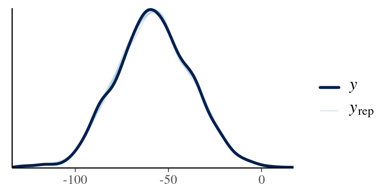
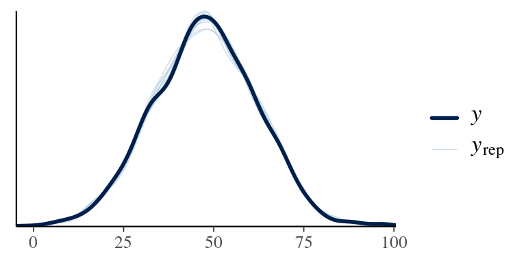
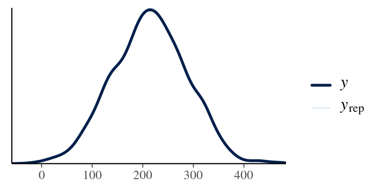
#| label: coefficients_2
#| echo: false
summary(mod_7)$fixed Estimate Est.Error l-95% CI u-95% CI Rhat Bulk_ESS
x_Intercept 11.941566 0.16427945 11.6190900 12.267412 1.000503 11176.576
y_Intercept 12.318854 0.42500044 11.4977875 13.148660 1.000337 6507.183
b_Intercept -14.898405 0.33399696 -15.5460275 -14.252475 1.001071 7304.193
x_a 3.604818 0.01547007 3.5742700 3.635172 1.000459 11851.957
y_x -1.718194 0.03241209 -1.7819045 -1.655407 1.000254 6399.394
y_a 1.154741 0.11782460 0.9270995 1.387789 1.000202 6464.990
b_x 2.456469 0.04152228 2.3753800 2.538481 1.001028 6580.521
b_y -1.933204 0.02941317 -1.9907715 -1.875850 1.000845 6500.644
Tail_ESS
x_Intercept 5533.619
y_Intercept 5784.378
b_Intercept 6714.671
x_a 5253.892
y_x 5761.419
y_a 5641.095
b_x 5554.106
b_y 5596.162#| label: stan_2
#| echo: false
make_stancode(se_1 + se_2 + se_3 + set_rescor(FALSE), data = sim_dat)// generated with brms 2.22.0
functions {
}
data {
int<lower=1> N; // total number of observations
int<lower=1> N_x; // number of observations
vector[N_x] Y_x; // response variable
int<lower=1> K_x; // number of population-level effects
matrix[N_x, K_x] X_x; // population-level design matrix
int<lower=1> Kc_x; // number of population-level effects after centering
int<lower=1> N_y; // number of observations
vector[N_y] Y_y; // response variable
int<lower=1> K_y; // number of population-level effects
matrix[N_y, K_y] X_y; // population-level design matrix
int<lower=1> Kc_y; // number of population-level effects after centering
int<lower=1> N_b; // number of observations
vector[N_b] Y_b; // response variable
int<lower=1> K_b; // number of population-level effects
matrix[N_b, K_b] X_b; // population-level design matrix
int<lower=1> Kc_b; // number of population-level effects after centering
int prior_only; // should the likelihood be ignored?
}
transformed data {
matrix[N_x, Kc_x] Xc_x; // centered version of X_x without an intercept
vector[Kc_x] means_X_x; // column means of X_x before centering
matrix[N_y, Kc_y] Xc_y; // centered version of X_y without an intercept
vector[Kc_y] means_X_y; // column means of X_y before centering
matrix[N_b, Kc_b] Xc_b; // centered version of X_b without an intercept
vector[Kc_b] means_X_b; // column means of X_b before centering
for (i in 2:K_x) {
means_X_x[i - 1] = mean(X_x[, i]);
Xc_x[, i - 1] = X_x[, i] - means_X_x[i - 1];
}
for (i in 2:K_y) {
means_X_y[i - 1] = mean(X_y[, i]);
Xc_y[, i - 1] = X_y[, i] - means_X_y[i - 1];
}
for (i in 2:K_b) {
means_X_b[i - 1] = mean(X_b[, i]);
Xc_b[, i - 1] = X_b[, i] - means_X_b[i - 1];
}
}
parameters {
vector[Kc_x] b_x; // regression coefficients
real Intercept_x; // temporary intercept for centered predictors
real<lower=0> sigma_x; // dispersion parameter
vector[Kc_y] b_y; // regression coefficients
real Intercept_y; // temporary intercept for centered predictors
real<lower=0> sigma_y; // dispersion parameter
vector[Kc_b] b_b; // regression coefficients
real Intercept_b; // temporary intercept for centered predictors
real<lower=0> sigma_b; // dispersion parameter
}
transformed parameters {
real lprior = 0; // prior contributions to the log posterior
lprior += student_t_lpdf(Intercept_x | 3, 47.9, 14.5);
lprior += student_t_lpdf(sigma_x | 3, 0, 14.5)
- 1 * student_t_lccdf(0 | 3, 0, 14.5);
lprior += student_t_lpdf(Intercept_y | 3, -58.4, 20);
lprior += student_t_lpdf(sigma_y | 3, 0, 20)
- 1 * student_t_lccdf(0 | 3, 0, 20);
lprior += student_t_lpdf(Intercept_b | 3, 215.6, 74.1);
lprior += student_t_lpdf(sigma_b | 3, 0, 74.1)
- 1 * student_t_lccdf(0 | 3, 0, 74.1);
}
model {
// likelihood including constants
if (!prior_only) {
target += normal_id_glm_lpdf(Y_x | Xc_x, Intercept_x, b_x, sigma_x);
target += normal_id_glm_lpdf(Y_y | Xc_y, Intercept_y, b_y, sigma_y);
target += normal_id_glm_lpdf(Y_b | Xc_b, Intercept_b, b_b, sigma_b);
}
// priors including constants
target += lprior;
}
generated quantities {
// actual population-level intercept
real b_x_Intercept = Intercept_x - dot_product(means_X_x, b_x);
// actual population-level intercept
real b_y_Intercept = Intercept_y - dot_product(means_X_y, b_y);
// actual population-level intercept
real b_b_Intercept = Intercept_b - dot_product(means_X_b, b_b);
}basic_dag <- dagify(
Y ~ X + A,
X ~ A,
B ~ X + Y,
exposure = "X",
outcome = "Y",
coords = list(
x = c(X = 1, Y = 3, A = 2, B = 2),
y = c(X = 1, Y = 1, A = 2, B = 0)
)
)
basic_dag_plot <- basic_dag |>
tidy_dagitty() |>
mutate(var_type = case_when(
name == "X" ~ "Exposure",
name == "Y" ~ "Outcome",
str_detect(name, "A") ~ "Confounder",
str_detect(name, "B") ~ "Collider"
)) |>
mutate(var_label = case_match(name,
"X" ~ "Treatment",
"Y" ~ "Outcome",
"A" ~ "",
"B" ~ ""
))
ggplot(basic_dag_plot, aes(x = x, y = y, xend = xend, yend = yend)) +
geom_dag_edges() +
geom_dag_point(aes(color = var_type), size = 12) +
geom_richtext(
aes(label = name), fontface = "bold", color = "white",
fill = NA, label.color = NA,
label.padding = grid::unit(c(3, 0, 0, 0), "pt")
) +
geom_dag_text(
data = filter(basic_dag_plot, var_type != "Confounder"), aes(label = var_label),
nudge_y = -0.25, color = "black", size = 11, size.unit = "pt"
) +
geom_dag_text(
data = filter(basic_dag_plot, var_type == "Confounder"), aes(label = var_label),
nudge_y = 0.26, color = "black", size = 11, size.unit = "pt"
) +
geom_text(
aes(x = (x + xend) / 2, y = (y + yend + 0.4) / 2, label = c("3.60","1.15","","2.45","-1.72","-1.93")),
color = "black", size = 5
) +
scale_color_manual(values = c("#44AA99", "#6699CC", "#882255","#999933"), guide = "none") +
theme_dag()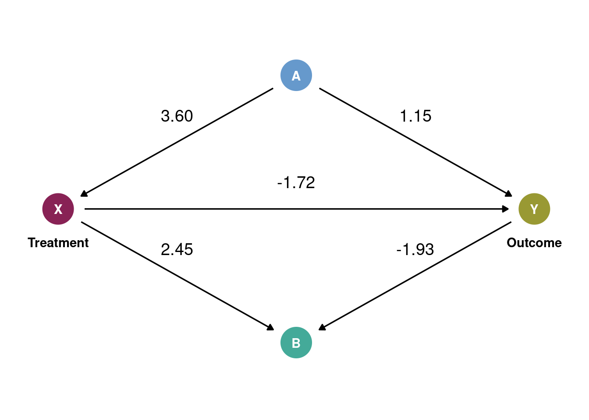